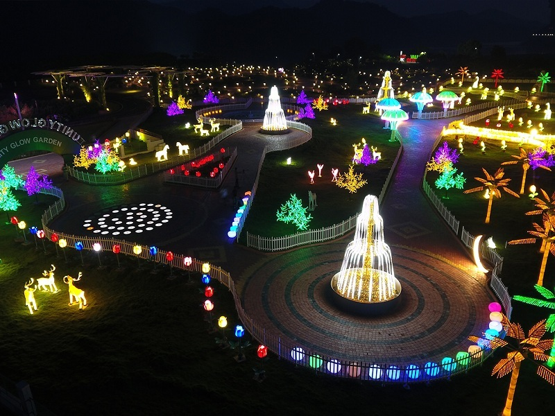

The evenings around the Statue of Unity in Ekta Nagar are illuminated with attractive and vibrant lights now,
as the Unity Glow Garden, a unique theme park has been developed with a glimmering array of installations,
figures and optical illusions. There are many botanical and various animals and birds and LED fountain inspired with
glowing lights on display to welcome all tourists to experience the joy of night tourism.
It has earned the title of being a popular destination park already,
as more and more tourists are pouring in to experience the beauty of Ekta Nagar at night.
This was intended to create a zone that gave different feel and ambience in the evenings and enable night-tourism
to flourish in the vicinity of Statue of Unity.
